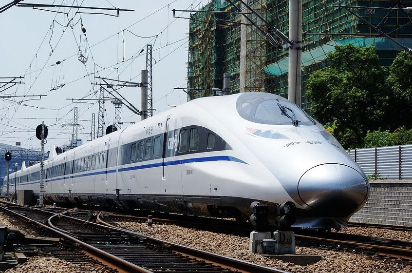

China Railway CRH380A
The CRH380A Hexie (simplified Chinese: 和谐号; traditional Chinese: 和諧號; pinyin: Héxié Hào; literally: "Harmony") is a Chinese electric high-speed train that was developed by CSR Corporation Limited (CSR) and is currently manufactured by CSR Qingdao Sifang Locomotive & Rolling Stock Co., Ltd. As a continuation of the CRH2-380 program it both replaces foreign technology in the CRH2 with Chinese developments and increases the top speed.[2] The CRH380A is designed to operate at a cruise speed of 350 km/h (217 mph) and a maximum of 380 km/h (236 mph) in commercial service. The original 8-car train-set recorded a top speed of 416.6 km/h (258.9 mph) during a trial run[3] and the longer 16-car train-set reached 486.1 km/h (302.0 mph).[4]
CRH380A is one of the four Chinese train series which have been designed for the new standard operating speed of 380 km/h (236 mph) on newly constructed Chinese high-speed main lines, and the only series to officially not be based on a foreign design and produced under a technology transfer agreement, although there have been accusations that it is based on unlicensed Shinkansen technology.[5]
The other three are CRH380C which uses technology from Siemens, CRH380B with technology from Hitachi and CRH380D with technology from Bombardier Transportation.
The trains have had their operating speed reduced to 300 km/h (186 mph) after the Wenzhou train collision, in 2011.